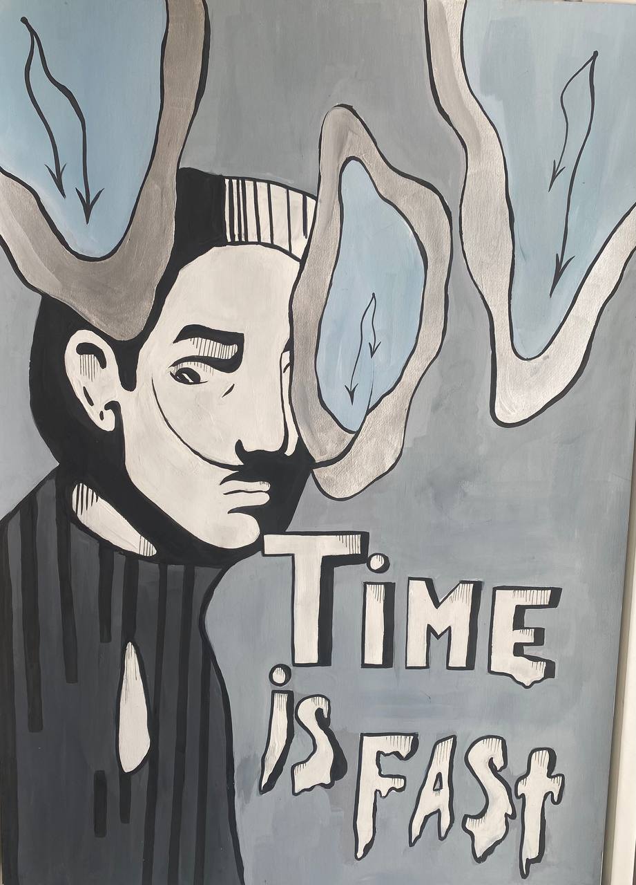

we współczesnym świecie kobiece ciało jest często wykorzystywane jako zabawka: agencje modelek, moda, kino. Wszędzie widać brak szacunku do kobiecego ciała
niebiańskie stworzenie na Ziemi
na tym obrazku przedstawiłam cały ból niebiańskiego stworzenia po przybyciu na Ziemię
Karmazynowy spokój: Gorgona w otchłani
Mityczne stworzenia słyną ze swojego mistycyzmu i tajemniczości. Meduza Gorgon to jedna z najpopularniejszych postaci w mitologii greckiej. Fascynuje swoim pięknem, dlatego zdecydowałam się przedstawić go na tym zdjęciu w kolorze czerwieni
w poszukiwaniu pokoju
na tym zdjęciu pokazałam znaczenie pokoju na świecie. Ludzie zawsze borykali się z trudnościami i w dzisiejszym świecie musimy uwolnić ich od okrucieństwa tego świata. Obraz ten przepełniony jest duchem wolności i pokoju
martwa natura w czerwono-szarym kolorze
obraz ten łączy w sobie dynamikę abstrakcji i statykę gipsowej głowy mężczyzny. tak różne kierunki w sztuce bardzo harmonijnie się ze sobą łączą
projekt pokoju leśnego
do stworzenia obrazu wykorzystałam tkaninę z wizerunkiem kwiatów, gdzie namalowałam leśny pokój z dużą ilością kwiatów i ciepłym oświetleniem
priorytety
każdy ma swoje priorytety, a na tym zdjęciu pokazałam jak ważne jest posiadanie właściwych priorytetów. Mężczyzna na zdjęciu myśli tylko o pieniądzach. A zamiast serca ma tylko pieniądze, choć w naszym życiu nie jest to zbyt istotne
niebo opowieści
wszystkie książki mają swoją historię. Za pomocą książek przenosimy się w inny świat. Na tym zdjęciu chciałam pokazać, jak ważne są książki i możliwości, jakie nam dają
Harmony in Diversity: The Vegan Vision
Jednym z największych problemów jest masowe zabijanie zwierząt w celu zdobycia pożywienia. Straszna liczba zwierząt umiera dla mięsa i skóry. Weganizm stał się teraz łatwiejszy, więc znacznie łatwiej jest przejść na życie bez zabijania zwierząt
Geniusz w spoczynku: odbicie Leonarda
Leonardo Da Vinci zawsze mnie inspiruje, dlatego przedstawiłem jego szkic konia i portret samego artysty w graficznym stylu
Wschodnia zaduma: postimpresjonistyczny splendor
dwie rzeczy, które zawsze mnie fascynowały, to kultura Wschodu i styl, w jakim malował Van Gogh. Dlatego ta martwa natura ukazuje całe piękno pojednania postrecesjonizmu z kulturą Wschodu

Salvador Dalí i jego płótno
Jego twórczość dla wielu jest niezrozumiała i dziwna, ale jednocześnie wyjątkowa i niezapomniana.To właśnie zainspirowało mnie do stworzenia tego obrazu
cykliczność sztuki
Gdybyśmy nie ewoluowali, sztuka zawsze miałaby charakter cykliczny. Rysunek ten doskonale łączy nowoczesną abstrakcję i klasyczną gipsową główkę
projekt domu na kółkach
Domek mobilny to dobra opcja na zakwaterowanie w podróży. Narysowałam projekt stworzenia takiego domu